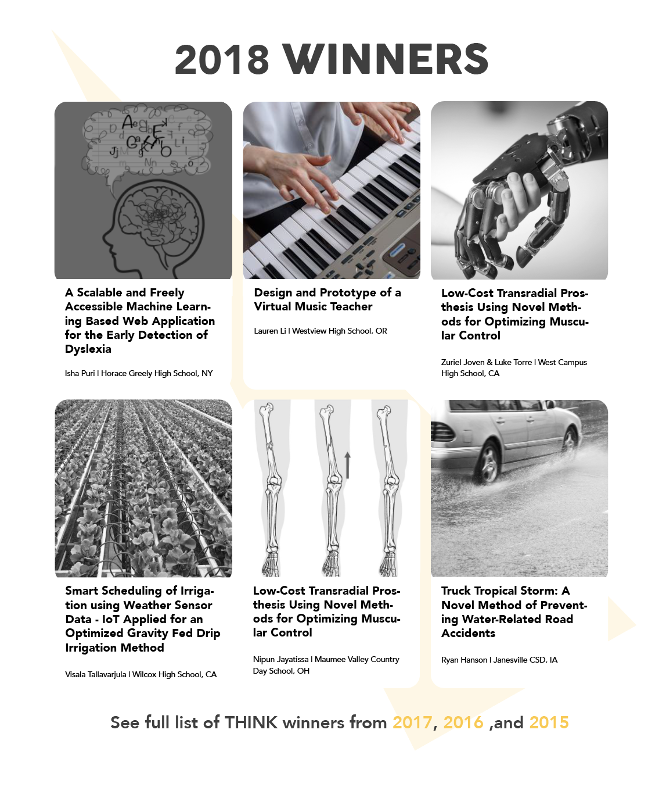
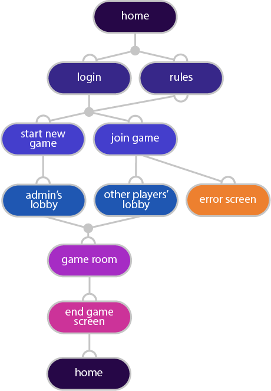
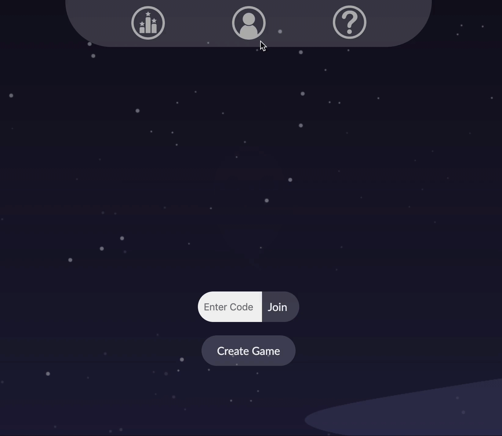
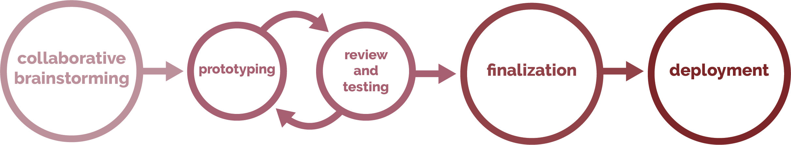
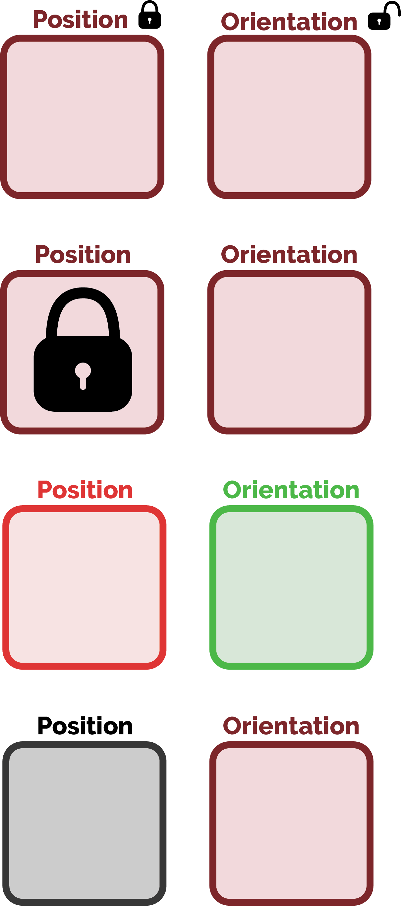
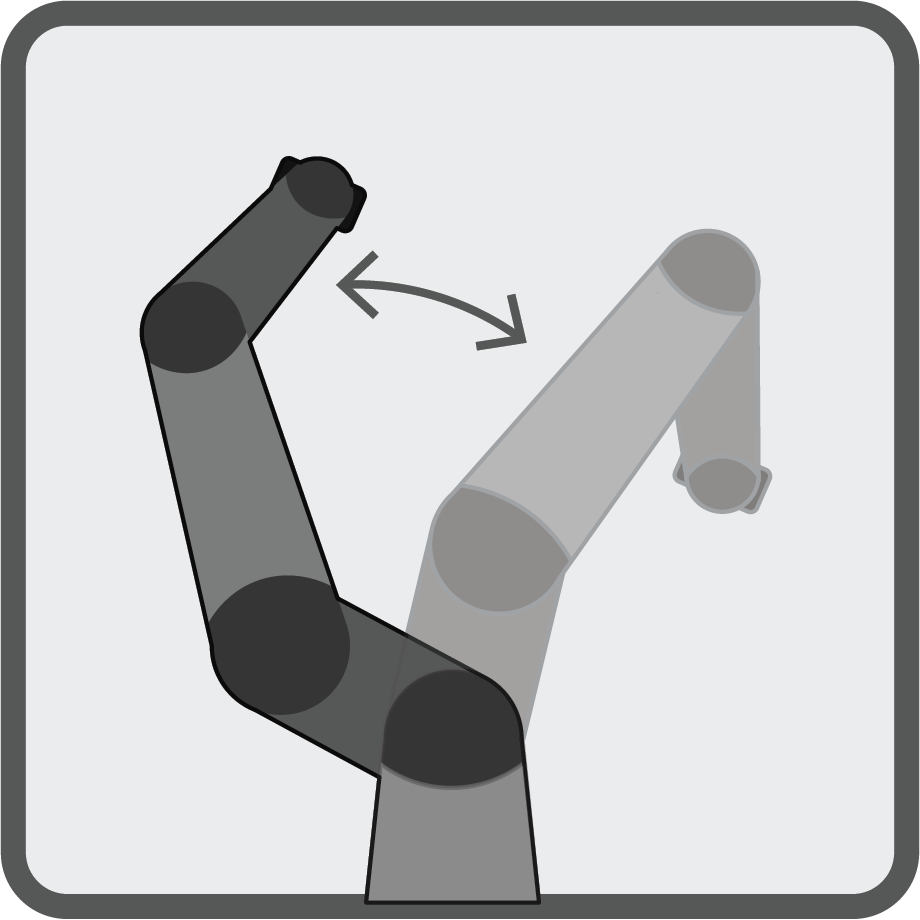
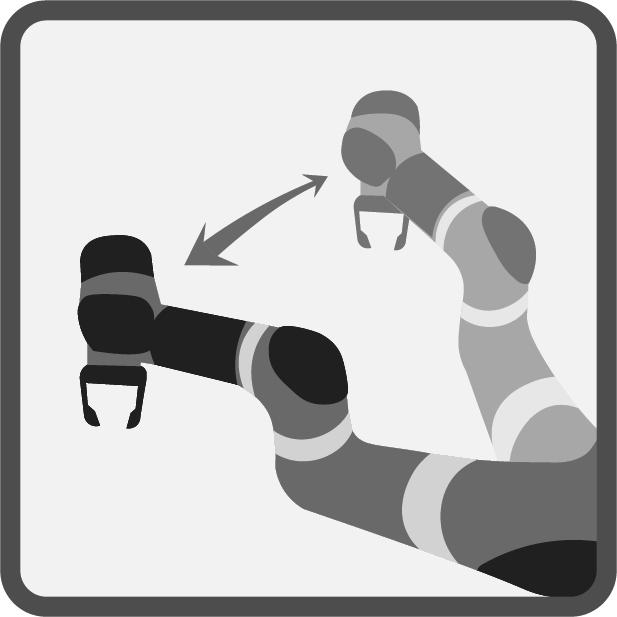
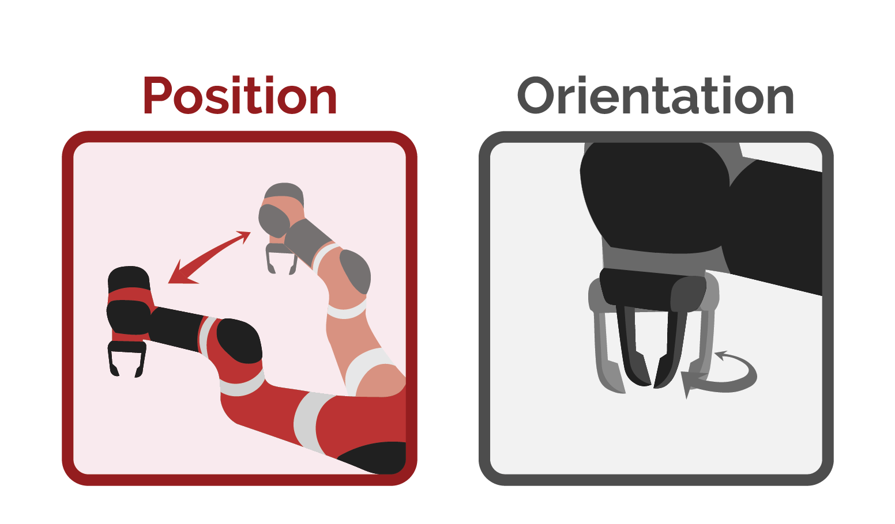
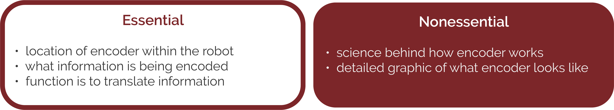
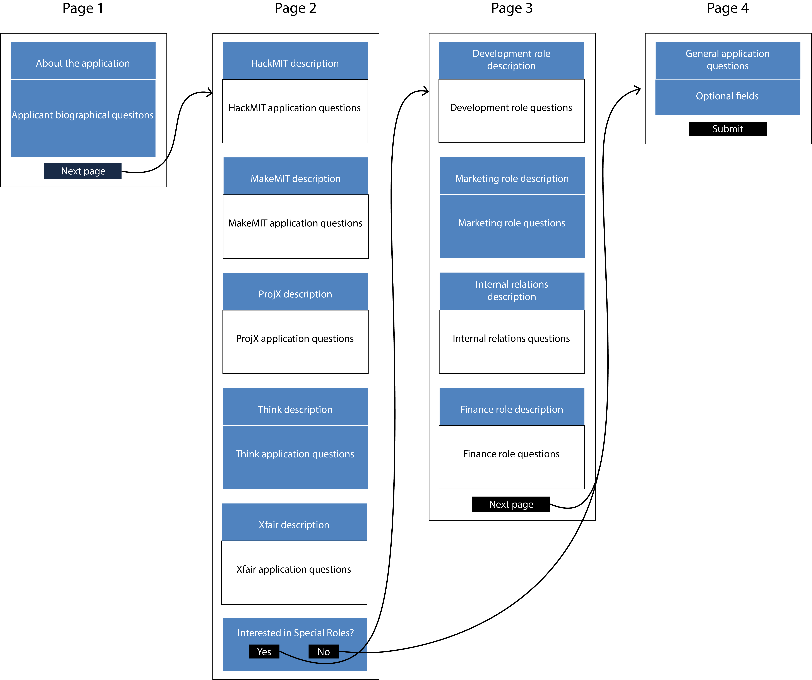

Hi, I'm Rachel!
I am a UI/UX designer who loves to create intuitive designs and fulfilling user experiences.
TIMELINE OF ME
Sometimes, the best way to get to know someone is by first learning about their life experiences — so, here are just a few of mine that have shaped me into who I am today.
-
1999
I was born in Seoul, South Korea
-
2001
My family immigrated to the United States
-
2006
We adopted Pinky
-
2013 JUL
My family became official US citizens
-
2013 AUG
I started attending a tiny, public high school in Wilmington, CA
It was made of seven bungalows, built on two old tennis courts -
2016 MAR
I entered my first art competition
And even won a thing! -
2016 JUL
I got my first digital tablet
A Wacom Intuos S, which I still use — this was my first drawing with it! -
2016 AUG
My high school started its first computer science class
Check out my first coding project here! -
2017 3.14
I got into MIT — my home for the next four years
-
2017 SEP
I joined a dance team for the first time
-
2017 DEC
I saw snowfall for the first time
It was pretty magical -
2018 JUN
I joined the KIXLAB (KAIST Interaction Lab) family
-
2018 AUG
I officially switched my major from Computer Science to Art and Design
-
2018 DEC
I presented to professional designers for the first time
-
CONTACT
Want to work on something awesome together?
Feel free to reach me at kwakseo@mit.edu for business-related (or any other) inquiries!
Click here to view my resume!
THINK is an MIT undergraduate-run program that awards high school students who want to conduct their own research projects with funding and mentorship. With a new cycle of THINK applications approaching, our team decided to improve the usability and aesthetic of our website, since it is an essential resource that all our applicants visit to apply.
ROLE
User Experience Design, User Interface Design
DATE
Fall 2018
COLLABORATORS
Su Yang (MIT '20), Elizabeth Zhou (MIT '21), Kathryn Jin (MIT '22)
INITIAL FEEDBACK COLLECTION
Before beginning the redesign, a meeting was dedicated for all members of the THINK team — around 20 members — to thoroughly review the website and gather feedback about every section of the website.
Feedback was organized by section, with the most common feedback being emphasized in bold.
STYLE GUIDE
One common critique about the old website was that it did not look cohesive due to inconsistent colors and style throughout different sections.
Thus, before distributing the redesign work among our team, we established a clear style guide to maintain a consistent look throughout our separate sections.
This styleguide was organized by Kathryn Jin (MIT '22).
SECTION REDESIGNS
HOME
For the website redesign, our team focused on highlighting the most important information.
We accomplished this for our home page by making the most sought-out information — whether or not applications are open — highly visible and eliminating all unnecessary text around it. We also used a background image that gives a sense of what our program is about to potential applicants.
BEFORE

AFTER

WINNERS
One section I led the redesign for was the past THINK winning projects.
The new layout uses a grid-design and images that go with the project titles in order to make the text easier to digest, compared to the old design that feels crowded with text.
BEFORE
AFTER
TEAM
I also was in charge of redesigning the section that shows the team that organizes THINK.
My solution to the main problem with our old layout — the bulkiness — was to turn it into a space-efficient carousel that is easily scalable as our team grows.
BEFORE
AFTER

The final mockup was created using Adobe Illustrator.
MarkIt is a prototype review app for non-permanent marketplace vendors, created for course 4.051: Human Factors in Innovation and Design Strategy. It was presented to professional experiential designers from the design consultancy Continuum as well as MIT architecture faculty, and was met with enthusiastic reviews.
SKILLS
Prototyping, User Experience Design, User Experience Research
DATE
Fall 2018
FIELD RESEARCH
The motivation for MarkIt came from preliminary research by visiting the Copley Square Farmers Market in Boston with several classmates.
Throughout our visit, we took note of difficulties we experienced while browsing and shopping. I then organized our notes into three categories to address in my project.
OPPORTUNITY STATEMENT
The three categories of difficulties had a common factor, which was that they stemmed from disorientation caused by unfamiliarity with the vendors, products, and layout of the market. Thus, I decided to focus my design to answer this question:
How might we better inform shoppers in the farmers market
so that they feel more directed while shopping?
STORYBOARDS + PERSONAS
An important consideration in deciding what product to design was that although my target demographic was first-time shoppers, I did not want to introduce a product that disrupts the experiences of those who enjoy the market as they already know it.
Keeping this in mind, I created a storyboard visualizing a reimagined farmers market experience following two common personas for first-time shoppers.


NEED-FINDING
While creating the storyboard, I found three forms of information that are currently unavailable and would improve the experience of first time shoppers:​

FINAL PROTOTYPE
The final prototype is a product similar to existing review apps such as Yelp. However, it has implications for marketplaces, which are not well-accounted for in such products.
Unlike Yelp, MarkIt distinguishes reviews by specific vendors and displays the specific location of vendors' booths in the market.
Although I envisioned a physical map in my storyboard, I ultimately decided to incorporate it into a digital solution due to the adaptability of a digital map to changes in the farmers market.
INTERACTIVE MAP

LABEL SEARCH

REVIEWS

The final prototype was created using Adobe Xd and Adobe Illustrator.
Ghost is an online word game for friends that is based on the traditionally spoken game with the same name. It was developed for course 6.148: Web Programming Class & Competition within 22 days. Ghost was awarded Honorable Mention by course sponsors as well as People's Choice by voters.
ROLE
Game Design, Software Development, User Experience Design, User Interface Design
DATE
January 2018
COLLABORATORS
Calvin Phung (MIT '21), Lillian Bu (MIT '21)
OPPORTUNITY STATEMENT
The benefit of online games is that friends can play together regardless of distance. However, due to differences in levels of experience between friends, and high barriers for entry due to game complexity, friends often struggle to play with one another. Thus, our team focused on answering the following question:
How can we make a simple game that is fun and fair for everyone
so that friends can play together online regardless of experience?
THE GAME
RULES
A game that came to mind was a word game from our childhood — Ghost. In it, players take turns adding one letter each to the end of a growing string. If a player completes a word that is not part of a longer one, or creates a string that is not part of any word, they get a strike. Five strikes and they become a ghost!
The beauty of the game is in its simplicity — it is easy to learn, and experienced players do not have a significant advantage against beginners.
CREATING AN ONLINE VERSION
The benefit of bringing Ghost online was that we were able to enhance the traditional version with these features, which are only possible in a digital space:

Before starting development, we outlined the game flow as well as the structure of our React.js frontend.
PAGE FLOW
COMPONENT DIAGRAM

We used Socket.io to support realtime play, Node.js for our server, MongoDB to store player data, and Datamuse API to check the validity of letters.
AESTHETIC
A key component to digital games is visual stimulation. Therefore, as our team's designer, I put special effort into designing delightful and smooth visual effects.
The moving background was designed to encourage excitement as the game progresses. Since ghosts (supposedly) come out at night, I decided to make the background start from an orange sunset and scroll up to a starry deep violet — the longer a round goes, the deeper players go into the night.
In addition, an easter egg was included for players who have already become ghosts to be able to interact by floating around on the screen and distracting ongoing players.
HOME
CREATE GAME

GAME PLAY

EASTER EGG

ITERATIVE DESIGN
The final design — from the layout of the game to the shape of the clouds — is a culmination of many incremental changes made based on constant play testing and feedback acquired from players, teammates, and mentors.
LAYOUT

BACKGROUND FEATURES


LOGO
GRADIENT


SCREEN


All icons and graphics were created using Adobe Illustrator.
TeachBot is a robotic educational tool and curriculum that teaches manufacturing workers about various aspects of robotics using a hands-on, robust learning interface and direct interaction with a robot. I worked in MIT's d'Arbeloff Laboratory directed by Professor Haruhiko Harry Asada as an undergraduate research assistant focused on design and front-end development for TeachBot learning modules.
ROLE
Educational Design, Graphic Design, Front-End Development, User Experience Design, User Interface Design
DATE
Summer 2019
SUPERVISOR
Nicholas Selby (MIT Ph.D Candidate)
THE PROJECT
BACKGROUND
While the number of manufacturing jobs is rapidly on the rise, the skilled work force able to fulfill them is not growing nearly as quickly. TeachBot aims to solve this problem through a hands-on curriculum in which learners interact directly with a robot arm and accessories as they follow along digital learning modules that are projected onto a surface.
Currently, a working prototype of the system is being deployed and tested with industry partners.

INTERFACE DESIGN PROCESS
The impact of TeachBot depends largely on how well the digital learning modules illustrate new concepts to the learners. These modules are comprised of educational graphics and user interface components, all of which should be intuitive so that they enhance the learning experience rather than simply contribute to the learner's cognitive load. In order to achieve the quality of work that both my supervisor and I wanted for my designs, we followed a design process that involved collaborative brainstorming and multiple iterations before finalization.
For each of my design tasks, I used Adobe Illustrator to create graphics and Javascript for animated or interactive components. The graphics were integrated into the TeachBot learning modules through an HTML canvas.
ICON DESIGN
MOTIVATION
One of the TeachBot learning modules teaches about position and orientation in robotics. After a lesson about the concepts, the learner reviews them in an activity where they must move the robot arm to a specific position and orientation. They are able to change the position of the robot arm by pressing a white button on it, which unlocks the parts of the arm that let the learner freely move its position, and the orientation by pressing a grey button, which works correspondingly. The learner may switch between the two modes as often as needed to complete the task.
During learner testing of this activity, it was discovered that many struggled to understand what mode the robot arm was currently on. For example, one learner would press the grey button that corresponds with orientation, then try to move the robot's position, become frustrated when it doesn't behave as expected, and proceed to repeatedly press the incorrect button.
From this observation, it was apparent that learners needed a visual indication of whether the robot was in position or orientation mode. Therefore, my task was to create a status indicator to show which mode the robot arm was in.
IDEATION
I started by designing icons that represented each of the two modes. This proved to be a challenging task because there were no precedents of icons or symbols representing position and orientation in a robotics context which I could use as a model. However, I was able to draw inspiration from an icon that is commonly seen in word processors to indicate page orientation. This icon suggests movement — the same concept behind my icons — by showing a "before" and an "after" stage with an arrow drawing the motion between.
For the format of the status indicator, Nick and I agreed that the two icons should be displayed together, with some way of distinguishing which one was currently engaged. After brainstorming several options for how to distinguish this, we decided that the most intuitive way was to colorize the active icon and grayscale the inactive one.
ITERATION
My initial design for the position icon illustrated a top view of the robot arm as its position shifts between two states. For my final design, however, I shifted the view to an angle that is closer to what the learner is seeing. This angle also adds depth perception that makes the illustration more understandable.
BEFORE
AFTER
FINAL DESIGN
EDUCATIONAL GRAPHICS
LEARNING OBJECTIVE
Another learning module of TeachBot teaches basics about encoders in robotics. For this module, I designed an educational graphic that visualizes at a general scope the function of an encoder. The purpose of the graphic was to convey that an encoder is connected to a motor, encodes information such as the rotational angle of the motor, and represents this data to a computer through code.
IDEATION
The biggest challenge in creating this graphic was distinguishing what is essential to the learner's understanding from what is not. Together, Nick and I decided on the critical pieces of information to include. In addition, we agreed that including an inside view of the robot to show where the encoder is located, and an animation to illustrate its function, would make for an effective graphic.
ITERATION
Taking Nick's feedback on my initial design, I made several key changes to my rough initial prototype that led to my final animated educational graphic. The learning module containing this graphic was tested with learners and was received with positive reviews.
BEFORE

AFTER

FINAL DESIGN
TechX is an MIT student-run organization that encompasses five committees which aim to empower high school and college students through various opportunities to participate in tech innovation. The application portal, which was revamped to meet the fall 2019 application cycle, is more streamlined and embodies the TechX brand.
ROLE
Branding, User Experience Design, User Interface Design
DATE
Summer 2019
COLLABORATORS
Bryan Chen (MIT '21), Kevin Fang (MIT '21)
MOTIVATION
Techx's committees host large-scale events and competitions, such as MIT's largest hackathon, HackMIT, which attracts over a thousand college students from across the country. Thus, we put in a special effort to deliver outstanding user experience and design to the many students that we reach, leading to our reputation throughout MIT as an organization with an exceptional marketing team.
However, our member application portal prior to the Fall 2019 cycle was not up to our standards in terms of both the user flow and appearance. Since the application is one of the first ways that potential new members interact with TechX, it is crucial for it to establish the intended impression. Therefore, as TechX's director of marketing, I led the effort to transform the application experience for our future application cycles.
THE USER EXPERIENCE
According to feedback from past TechX applicants, the overarching problem with the original application portal was that the unnecessarily large amount of text on each page caused cognitive overload for potential applicants. Therefore, our team decided to eliminate all nonessential application questions, and I reorganized the page flow so that only relevant text is displayed to the applicant.
Below, blue indicates sections that are relevant to an imaginary applicant. Before, they had to scroll past many irrelevant and distracting parts of the application in order to reach the ones that mattered. Now, only necessary sections are displayed. Moreover, the new page flow reduces the length of each page, making them more digestable.
PAGE FLOW: BEFORE
PAGE FLOW: AFTER
In order to create an interface perfectly fit for the format of our application, I worked with two members of the TechX development team, Bryan Chen (MIT '21) and Kevin Fang (MIT '21), who implemented my design ideas.
THE BRAND
Contrary to our design standards, the UI of the original application interface — including the typography and colors — was not consistent with other TechX-branded materials. Therefore, before beginning the redesign, I established the general "look" of the portal.
The concept of my redesign is simple, clean, and modern. For typography, I looked for rounded sans-serif fonts that fit my concept and are easily readable. The colors used were taken from the standard TechX logo, and the subtle background gradient was created to add depth while retaining the visibility of the text.
ITERATION
Throughout the development process, the interface was constantly tested by TechX members who gave valuable feedback about usability that led to the final design.
OLD APPLICATION

INITIAL PROTOTYPE

FINAL DESIGN

MIC (Machine Intelligence Community) is an intercollege organization focused on promoting and fostering the growing interest around machine intelligence. I was asked by MIT MIC to lead their rebranding effort, which included a redesign for their website.
ROLE
Branding, Graphic Design, User Interface Design, User Experience Design
DATE
Summer 2019 — Current
MOTIVATION
MIT MIC had a major problem prior to Summer 2019, which was that they had not updated their website since 2017. Not only was their information outdated, but the original website had been put together without much attention to design. The goal of my redesign was to create a more useful, visually pleasing website that visitors would enjoy.
WIREFRAMES
For the layout of the website, I focused on the needs of its visiters. The main activities that students join MIT MIC for include their weekly reading groups and workshops. Therefore, the website was redesigned so that the first thing visitors would view on the home page was information about these activities.
BRANDING

For the "look" of the website, I decided on a sleek, dark-grey background with white text and bright point colors for a tech-y feel that fits with the organization's purpose and makes MIC's iconic logo stand out. The point colors were inspired by the logo, which I revamped for a cleaner look.
REDESIGN

Because MIC's logo is very unique and is a signature of the organization, I decided to emphasize it on the home page of their website through a simple animation. This way, it has a lasting impression on visitors, who would then recognize it elsewhere. The animation also makes the website more interesting and feel less static.